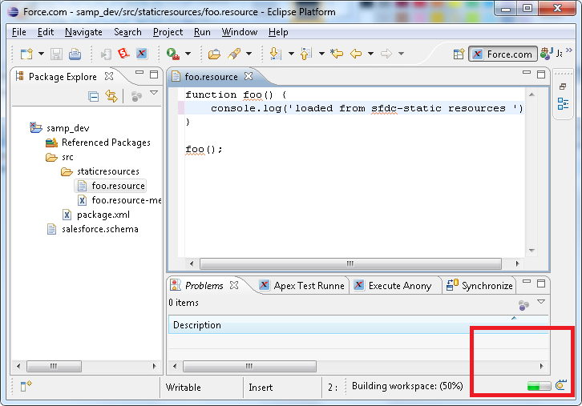
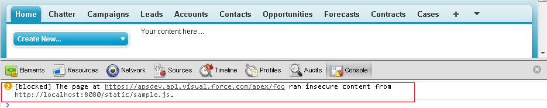
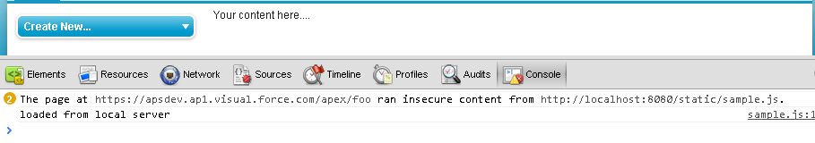

If you are a Force.com developer who has to write Visualforce pages and some bit of JavaScript, you surely would get frustrated with the slow "file-save" timings that you find with Force.com Eclipse IDE. While it is powerful, it also gets slow and irritating - especially when its not even compiling anything on the JavaScript resource. And to fix a missed "comma" and it can take 10 to 30 seconds to save it

Additionally, like me, you may not like writing javascript in Force.com IDE at all - it may not be the best JS editor - or for some other reason.
Also if you have quite a few javascript or css files, its better to use compressed resources. But one of the reasons people don’t create a compressed static resource in Force.com is that it’s a bit of a pain in the neck to edit their contents. One way out is to use the ZipEditor plugin but this tends to the save-stuff even slower. And if you have a compressed resource for styles & heavy images - it gets way too slow to save a single CSS file.
Since its a pain to edit the static resources, many developers start writing code JS and CSS in Visualforce pages... And end up with mixed up JS CSS VF code all in one Visualforce... something like below which is separated at a later point of time and requires extra time and effort.
<apex:page >
<style>
.formCheckbox{
vertical-align:bottom;
}
.tableCellSpace {
padding-bottom:10px;
}
</style>
<script>
function foo() {
var label = '{!$Label.SomeLabel}'
/* And some code like
(Indented with new lines only to fit correctly) */
document
.getElementById('{!$Component.someApexForm.someApexElementID}')
.value = 'something';
/* And sometimes people write horrible hard-to-separate code .
-- this I consider as bad abuse of template language... */
var i=0;
var arr = new Array();
<apex:repeat value="{!list}" var="listItem" >
arr[i] = new Array(2);
arr[i++][0]='{!listItem}';
</apex:repeat>
}
</script>
.......
</apex:page >
It is good to keep JS and CSS stuff separated right from the beginning to avoid such cases.
One of the productive technique that works best for me, even when working with large javascript code bases, is to use a local server to host the JS file. i.e using "http://localhost:NNNN/...".
I did not try "file://" since that has too many restrictions and removing those restrictions can particularly make my general browsing unsafe.
This local server may be anything - Tomcat/IIS/etc.. Or it could be Google App Engine SDK that is simpler to install runs a localserver for you Or a CherryPy server that I use.
<script src="{!$Resource.foo}" type="text/javascript"></script>
<!-- It will be {!$Resource.foo}/sample.js - in case of compressed resources -->
So now instead of accessing your JS file from Force.com (shown above), you can access it from the local machine - shown below
<script src="http://localhost:8080/static/sample.js" type="text/javascript"></script>
And you cannot completely do away with script stuff on the Visualforce tab - but can minimize it to accessing server side resources.
<script>
var labels = {
MyLabel: {!$Label.Mylabel}
}
/* Usage in js file -- labels.MyLabel */
</script>
Now you can use any editor like Notepad++ or TextMate, save the JS file instantaneously locally and refresh the page.
If you use Google Chrome , you will get the "content blocked" error.

To deal with this, you will need to start Chrome with "--allow-running-insecure-content" flag. This is required because your page URL would be secure "https://..." while the local server uses "http://". This flag is not required if you are using Firefox (tested on v18). You can simply create a batch file for launching Chrome when developing:
# chrome_insecure.bat c:\path-to-chrome-exe>>\chrome.exe --allow-running-insecure-content
Now Chrome will display a warning in console and continue

If you intend to use CherryPy server, the code for the applicaiton hosting these static files is simple
You can download the python code here
# jsLoader.py -- Simple CherryPy server that serves static content
# http://localhost:8080/static/
# Port may change and will be shown in command window
#!/usr/bin/python
import cherrypy
import os
class HelloWorld(object):
@cherrypy.expose
def index(self, **params):
return "Hello World!"
config = {'/static':
{'tools.staticdir.on': True,
'tools.staticdir.dir': os.path.dirname(os.path.abspath(__file__))+'/static',
}
}
cherrypy.quickstart(HelloWorld(), '/', config=config)
If you want to use Google App Engine SDK, simply create a new application and add static_dir handlers to app.yaml, shown below. For more information visit Getting Started for App Engine
..... handlers: - url: /favicon\.ico static_files: favicon.ico upload: favicon\.ico - url: /static static_dir: static - url: .* script: main.app .....
Hope this post was helpful - If you like it please share/like/comment on this.